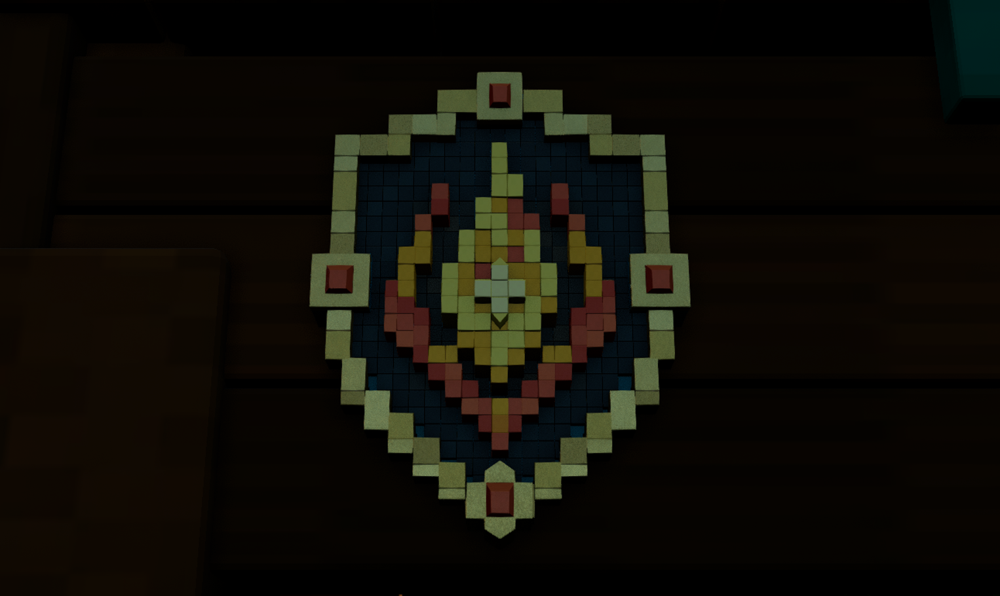
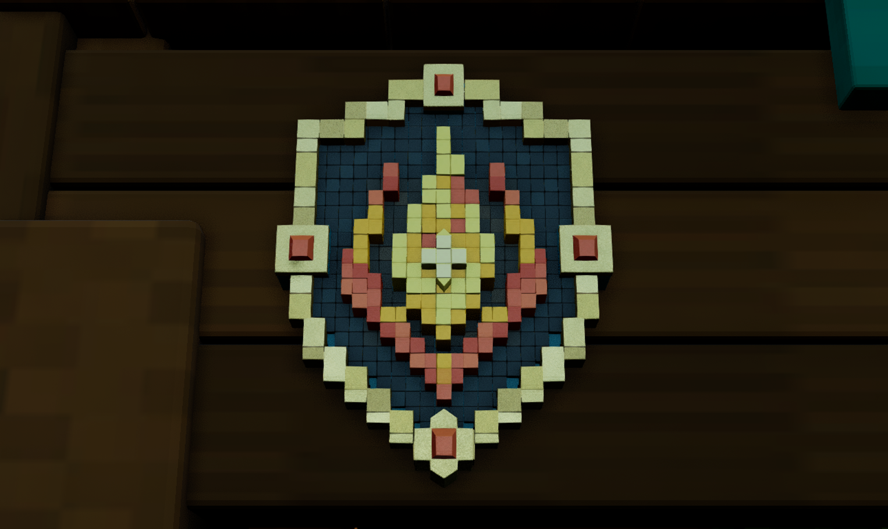
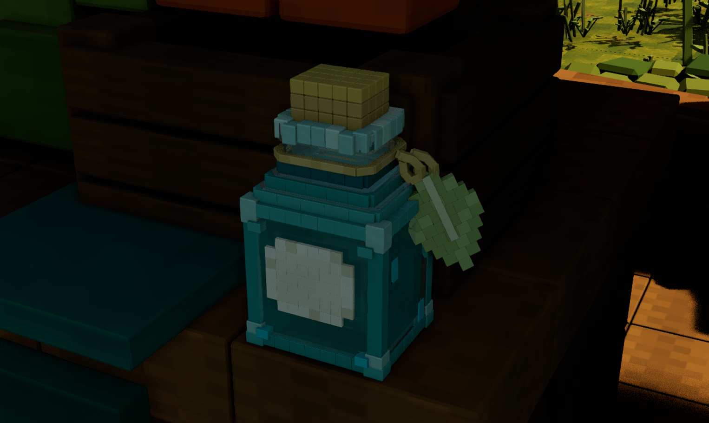
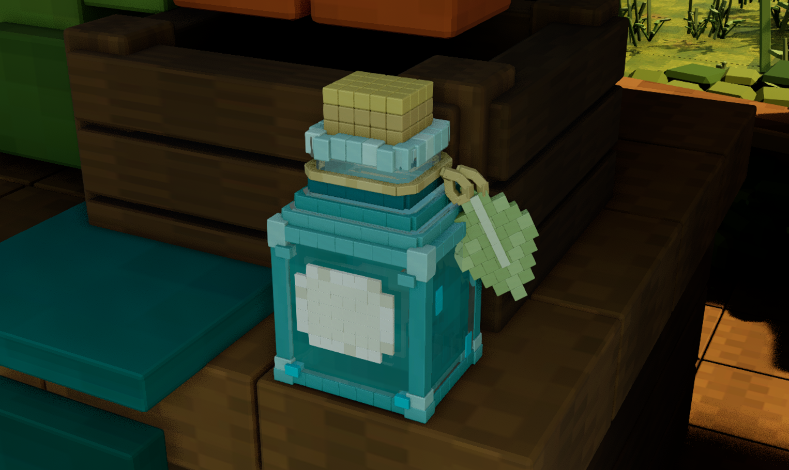
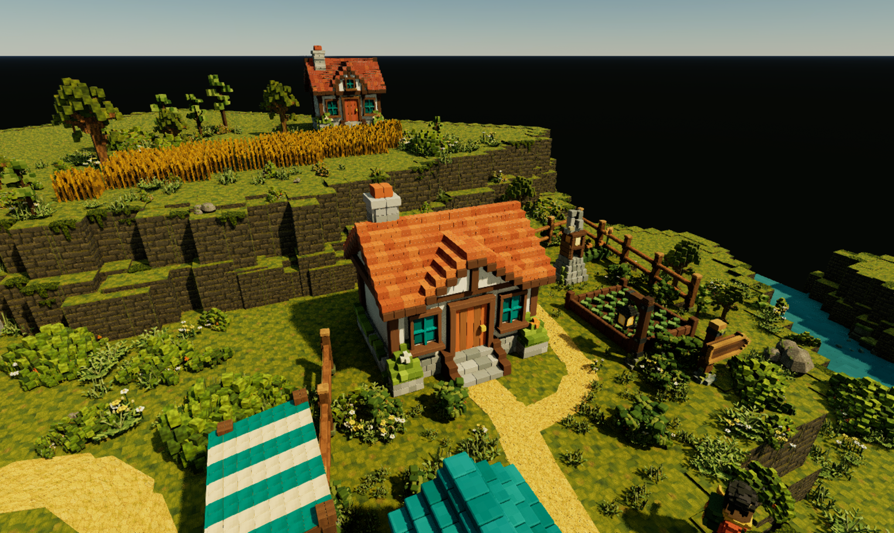
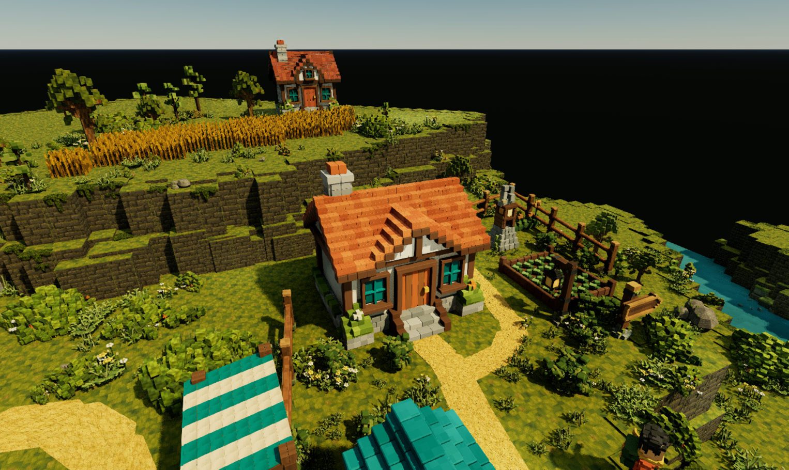
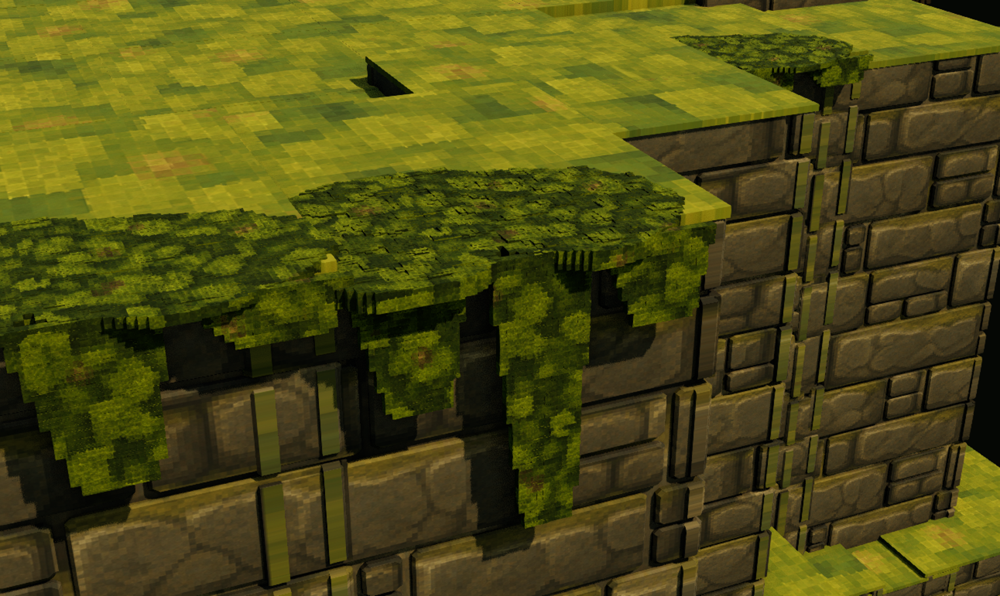
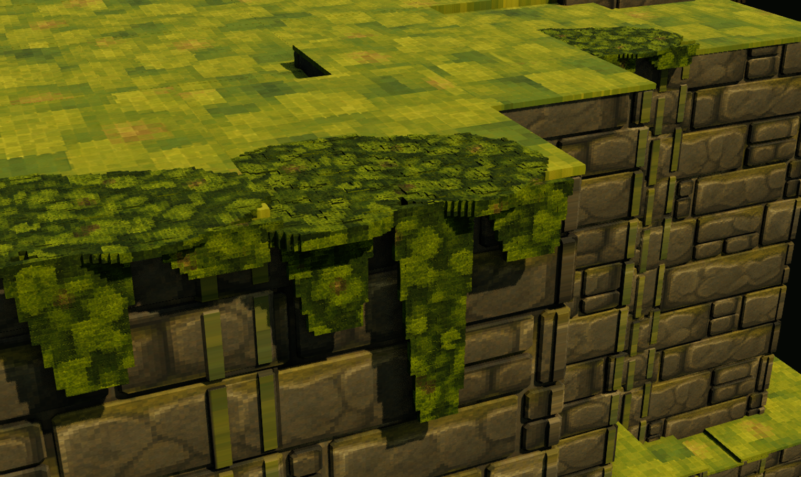

The saved HomesteadBlender sky fill changed from intensity 2.2 and a cool tint to intensity 7 and neutral white. Sun intensity (22,500 lux), direction and manual exposure bias (-12) remain unchanged. Each pair uses identical recorded camera settings.
Shaded details are clearer; sunlit roof and terrain details remain visible. The crest's muted metal and tonic's overly opaque glass still require material refinement. This is a lighting review, not asset approval.







